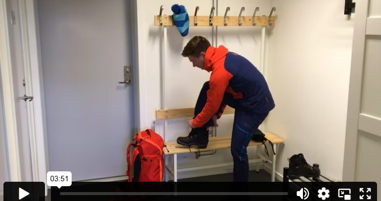

ارتداء الملابس بشكل وظيفي
عندما تنوي الخروج إلى الطبيعة، من المهم أن تخطط ملابسك وفقاً لحالة الطقس السائدة. ويجب أن تكون الملابس أيضاً مناسبة للنشاط الذي تخطط للقيام به. لذلك، فإن طريقة ارتدائك ستختلف كثيراً حسب الفصل، والطقس، والنشاط، لكن القاعدة الأساسية في اختيار الملابس هي دائماً أن تبقى جافاً ودافئاً.

لكي تبقى جافاً ودافئاً عندما يكون الجو بارداً قليلاً، تحتاج إلى ارتداء عدة طبقات من الملابس. نُسمي هذا غالباً مبدأ الطبقات أو مبدأ التعدد الطبقي. بشكل عام، يعتمد هذا المبدأ على ارتداء ثلاث طبقات، لكن بالطبع يجب أن تعدل ذلك حسب الظروف السائدة. عندما يكون الجو دافئاً قد تكفي طبقة أو طبقتان، لكن إذا كان الجو بارداً جداً قد تحتاج إلى طبقة أو طبقتين إضافيتين لتحافظ على دفء جسمك. عند ارتداء عدة طبقات، تتكون طبقات هوائية بين الملابس وهذه تساعد الجسم على البقاء دافئاً. وفقاً لهذا المبدأ يمكنك ارتداء الملابس في أي موسم، وكلما كان الجو أبرد تحتاج إلى طبقات أكثر. كما يجب تعديل نوعية وسمك الملابس حسب درجة الحرارة. ومن المهم أيضاً أن تأخذ في الاعتبار تأثير البرودة الناتج عن الرياح.
كذلك، تأكد من أن تكون الملابس مريحة ولا تسبب احتكاكاً.
الطبقة 1: الطبقة الأساسية
الطبقة الأقرب إلى الجسم وظيفتها نقل العرق وإبقاء الجسم جافاً. يجب أن تكون هذه الطبقة ملتصقة بالجسم. الملابس الداخلية ذات نسبة عالية من الصوف توفر دفء جيد جداً، وفي نفس الوقت تنقل الرطوبة بفعالية. الملابس الداخلية المصنوعة من المواد الصناعية تنقل الرطوبة أيضاً بشكل جيد، لكنها لا توفر دفئاً بنفس القدر، وقد تكون مفضلة عندما يكون الجو أكثر دفئاً قليلاً. تجنب ارتداء القطن بالقرب من الجلد لأن القطن يمتص الرطوبة، ومع وجود قميص مبلل قريب من الجسم ستشعر بالبرودة بسرعة.
الطبقة الثانية: الملابس الدافئة
الطبقة الثانية يجب أن تحافظ على الدفء وتقاوم البرودة من الخارج، وفي نفس الوقت، مثل الطبقة الأولى، يجب أن تنقل الرطوبة بعيداً. يختلف سمك هذه الطبقة حسب درجة البرودة. إذا كان الجو دافئاً يمكنك ارتداء قميص رقيق من مادة صناعية، وإذا كان الجو أبرد قليلاً فإن قماش الفليس (الصوف الصناعي) مناسب جداً. مع ذلك، يجب أن تأخذ في الاعتبار أن الفليس سهل الاشتعال إذا كنت قريباً من النار. كما ينبغي تجنب الملابس المصنوعة من القطن هنا أيضاً، لأن القطن لا ينقل الرطوبة بفعالية.
الطبقة الثالثة: ثوب صدفي
في الطبقة الخارجية، يجب أن ترتدي ملابس واقية تتحمل الرياح والأمطار، وفي نفس الوقت تسمح بمرور الرطوبة المتولدة من داخل الجسم.
الطبقات 4 و 5: طبقات إضافية
من الجيد أيضاً أن تحزم طبقة أو طبقتين إضافيتين قد تحتاجها عندما تشعر بالبرد أو تأخذ استراحة من نشاط بدني. قد يكون من المناسب ارتداء جاكيت من الريش فوق الطبقة الثالثة أو قميص أكثر سمكاً تحت الملابس الخارجية الواقية.
على قدميك
في الأيام الدافئة، يكفي ارتداء جورب مصنوع من مادة صناعية، فحتى القدمين يجب تجنب القطن للحفاظ على الجفاف والدفء. الجورب الذي يحتوي جزئياً على الصوف يوفر دفئاً جيداً وينقل الرطوبة بعيداً عندما يكون الجو بارداً قليلاً. إذا كان الجو بارداً جداً، قد تحتاج إلى زوجين من الجوارب. في هذه الحالة، من المهم ألا تكون الجوارب سميكة جداً بحيث تصبح الأحذية ضيقة، لأن ذلك يمنع تكوين طبقة هوائية تساعد على الاحتفاظ بالدفء، كما يمكن أن يعيق تدفق الدم إلى القدمين، مما قد يسبب الشعور بالبرد. يجب أن يكون الجورب الداخلي ملتصقاً بالقدم، بينما يمكن أن يكون الجورب الخارجي أكثر سمكاً من أجل الدفء.
من الحكمة اختيار الجوارب المناسبة حسب نوع الحذاء الذي سترتديه. إذا كان الحذاء مبطناً، غالباً ما يكفي زوج واحد من الجوارب. يجب أن تكون الأحذية مناسبة للنشاط الذي ستقوم به. إذا كنت تريد التنقل بسهولة وسلاسة، قد تكون أحذية الجري مناسبة، أما إذا كنت ستسير لمسافات طويلة فقد يكون من الأفضل استخدام أحذية المشي الطويل. وإذا كان الجو رطباً، فستحتاج إلى أحذية أو جزمة تحميك من البلل، أو زوج من أحذية المطر المطاطية التي تكون مريحة للمشي.
على الرأس
يفقد الجسم جزءاً كبيراً من حرارته من خلال الرأس والرقبة والعنق. وكلما زادت البرودة، زادت نسبة الحرارة التي يفقدها الجسم من هذه المناطق. لهذا السبب من المهم جداً ارتداء قبعة ووشاح في الشتاء. ارتداء ملابس مناسبة للجزء العلوي من الجسم يساهم كثيراً في الحفاظ على حرارة الجسم، حتى أنه إذا شعرت بالبرد في ساقيك يمكنك تدفئتهما بارتداء قبعة ووشاح.
على اليدين
هل فكرت يوماً أن أول ما يشعر بالبرد في جسمك عندما تصاب بالبرد هو أصابع اليدين والقدمين؟ هذا لأن الجسم يقلل تلقائياً من تدفق الدم إلى اليدين والقدمين عندما يصبح بارداً، ليُعطي الأولوية للأجزاء الأهم في الجسم. لذلك، من الجيد ارتداء قفازات أو كفوف. القفازات التي تجمع الأصابع معاً (قفازات الأصبع الواحد) تكون عادة أكثر دفئاً للأصابع، لأن الأصابع معاً تدفئ الهواء الموجود داخل القفاز.